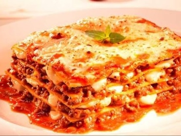

Lasanha a Bolonhesa

Sobre a receita
Essa receita de lasanha à bolonhesa é perfeita para um almoço de domingo, né?
Muito fácil de fazer e rende bastante.
Ingredientes
- 3 colheres de margarina
- 4 colheres de farinha de trigo
- 2 xícaras de leite
- 1 colher de óleo
- 2 dentes de alho amassados
- 1 cebola picada
- 300 g de carne moída
- 3 xícaras de polpa de tomate batida no liquidificador
- 3/4 xícara de água quente
- sal a gosto
- 200 g de presunto fatiada
- 200 g de mussarela fatiada
- 250 g de massa para lasanha
Passo a Passo
Molho branco:
- Derreta a margarina e doure a farinha em fogo baixo mexendo sempre, junte o leite aos poucos.
- Cozinhe até obter um molho encorpado, acrescente o creme de leite e tempere com sal e noz-moscada.
- Reserve.
Molho a bolonhesa:
- Aqueça o óleo junte o alho e a cebola até dourar.
- Acrescente a carne moída até fritar, quando a carne estiver frita acrescente a polpa de tomate e a água misture o sal e cozinhe até ferver.
Montagem:
- Em um refratário grande, coloque uma camada de molho à bolonhesa, massa para lasanha, presunto, mussarela, molho branco.
- Adicione mais massa para lasanha presunto e mussarela e termine com molho à bolonhesa.
- Se quiser, polvilhe um pouco de queijo parmesão ralado e leve ao forno para gratinar por 20 minutos.